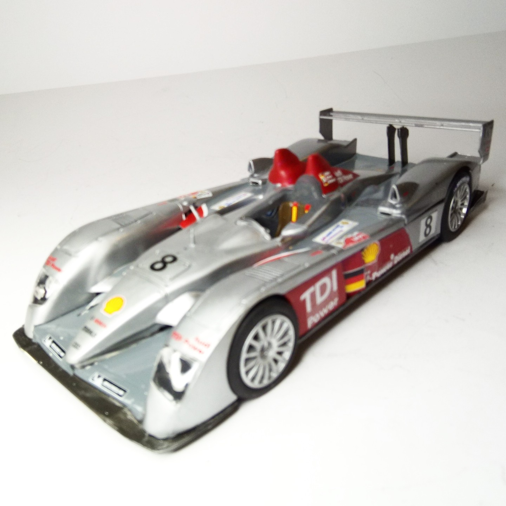
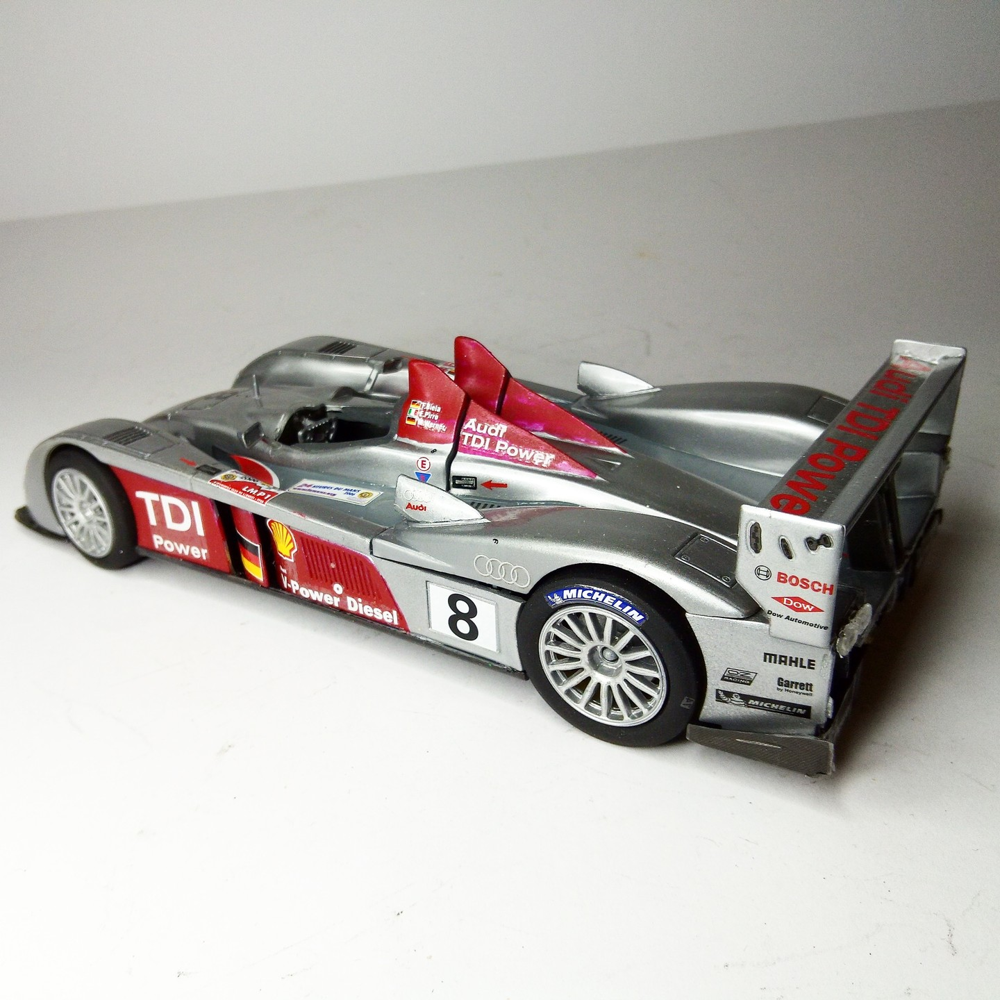

Auto e veicoli stradali · scale model archive
AUDI R10 TDI
AUDI R10 TDI — Kit: Revell, Scale: 1/24. LeMans winner 2006 Biela Pirro Werner, turbodiesel engine #1/24 #Revell #LMans #AUDI #AUDIR10

Photo gallery

English description
LeMans winner 2006 Biela Pirro Werner, turbodiesel engine
#1/24 #Revell #LMans #AUDI #AUDIR10
Descrizione italiana
Vincitrice a Le Mans 2006 con Biela, Pirro e Werner; motore turbodiesel.